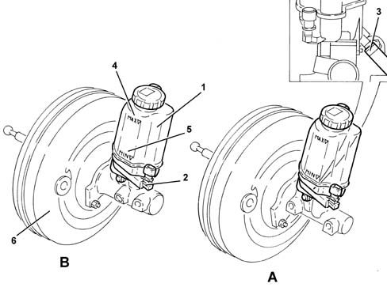

3330C brake pump, reservoir and load proportioning valve
- Path
- Descriptions > 33 BRAKING SYSTEM > 3330 HYDRAULIC BRAKING SYSTEM > 3330C brake pump, reservoir and load proportioning valve
- Kind
- system description
- Applies to
- all engines; all production periods
- Interactive page
- https://sloeber94.github.io/elrnDB-lYpsln/en/#/2427421
Applies to: all engines; all production periods
The brake control pump is integral with the brake servo 3330D brake vacuum system
The hydraulic brake system fluid reservoir is press-fitted to the upper part of the pump.
The reservoir is fitted with an attachment for connecting the supply pipe to the clutch release control hydraulic system.
On cars with a Selespeed transmission, the connection pipe to the clutch pump is plugged because clutch engagement and release are implemented automatically by the hydraulic speed control unit, which comes with a special reservoir .
The reservoir is fitted with a low fluid level indicator, which is activated when the fluid drops below a certain level. This informs the Body Computer, which turns on the warning light on the control panel.

A - Brake pump for cars without ESP B - Brake pump for versions with ESP 1 - Brake fluid reservoir 2 - Low brake fluid level sensor 3 - Attachment for clutch pump supply pipe (plug for Selespeed) 4 - Brake fluid MAX level gauge 5 - Brake fluid MIN level gauge 6 - Brake servo